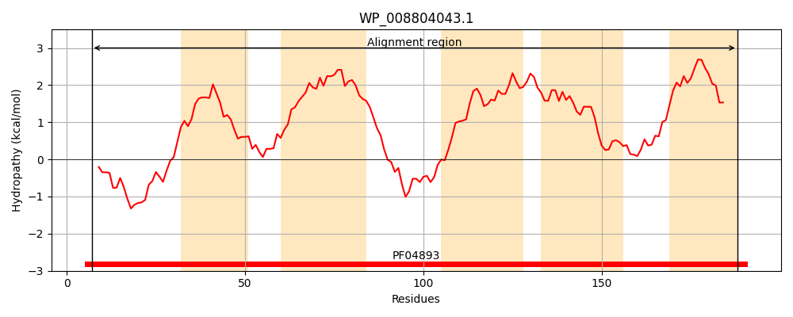
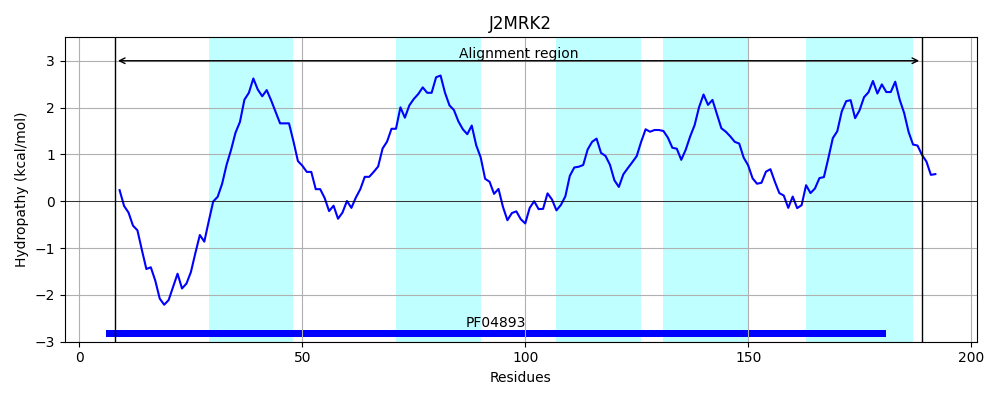
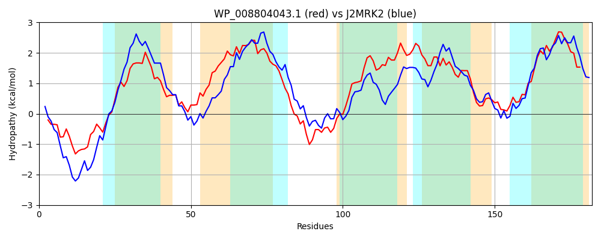

Hit Accession: J2MRK2
Hit TCID: 9.B.29.3.1
Hit Description: gnl|BL_ORD_ID|5454 gnl|TC-DB|J2MRK2|9.B.29.3.1 Uncharacterized protein OS=Pseudomonas fluorescens Q2-87 GN=PflQ2_2774 PE=4 SV=1
Mach Len: 182
e:0.000000
Query TMS Count : 5
Hit TMS Count: 5
TMS-Overlap Score: 4.300000
Predicted Substrates:None
BLAST Alignment:
Score: 409 , Bit scores: 162 bits, E-value: 1.1e-50, Alignment length: 182, Percentage identity: 40
Query: 7 LFAHPNREMSVIKSENETISHHYTHHVLLMAAVPVVCAFIGTTQLGWNFGDGTVIKLSMLTGLALAVLFYAVMLAGVAIMGRVIWWMARQYPQQPSLKRCMVFAGYVATPLFLSGIVALYPLVWLCALIGTIALFYTGYLLYLGIPTFLSINREEGLSFASSTLAIGVLVLEVLLAITVVLW 188
LF HP I+ + + HY H+LL+A +P VC FIG T GW+ + ++LS + L L VL Y ++ GVA+MG I WM+R + +P+L +C+ FA Y ATP FL+GI LYP WL + IA Y+ +LL++G+P F+ + +E+GL +++S +G+LVL +L ++LW
Sbjct: 8 LFTHPEFAWKDIREQEQEHPRHYLAHLLLLALIPAVCLFIGITWTGWSLAENETVRLSSASALQLCVLLYLTIVVGVALMGLFIRWMSRAFETRPTLNQCIGFAAYTATPYFLAGIFGLYPSRWLAVAVLAIASAYSTFLLFVGLPKFMGLKKEQGLLYSASVWGVGLLVLVTILVEMILLW 189 | Protein Hydropathy Plots: |
|---|
|  |  |
Pairwise Alignment-Hydropathy Plot:
|
|---|
|  |